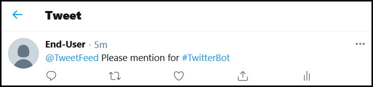
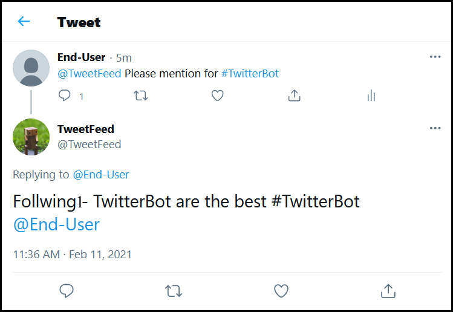
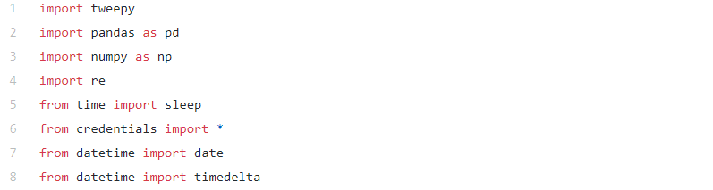
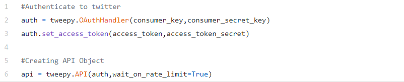
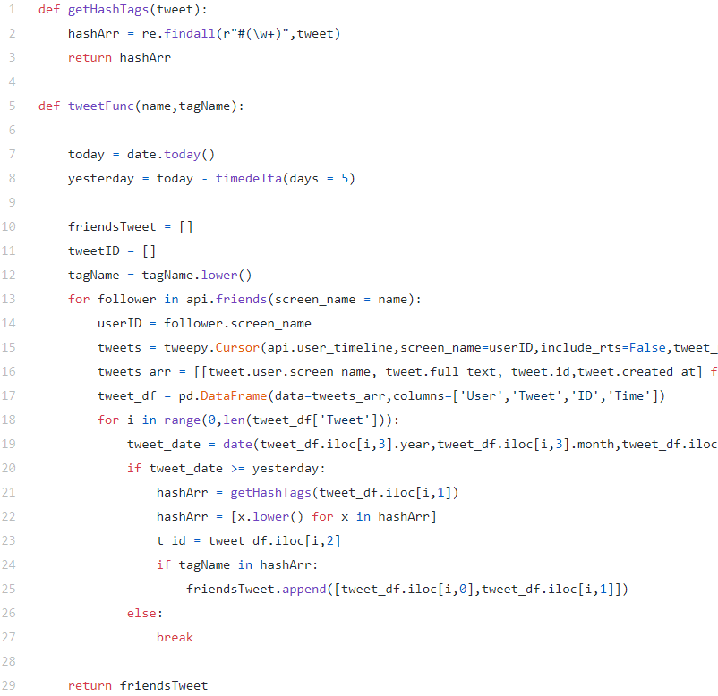
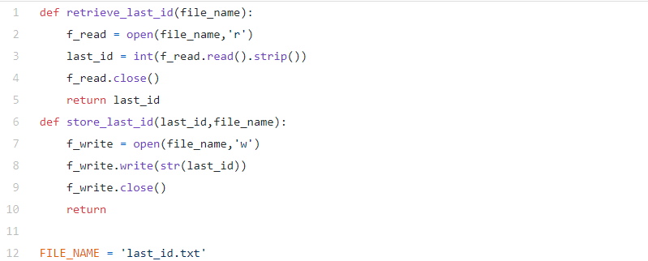
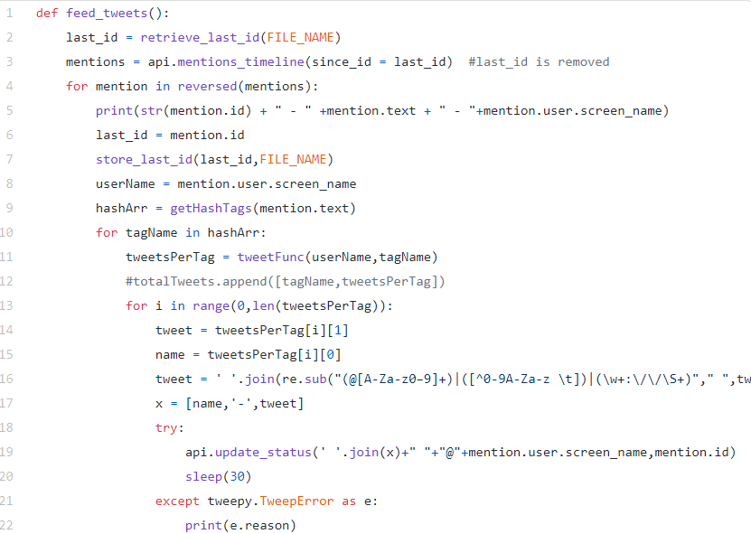

Counted among Twitter’s 270+ million dynamic clients, there are an untold number of bots. These were made by individuals with a heartbeat to tweet without human involvement. Some are helpful, others lovely, numerous impossible to miss. Bots, it ought to be stated, are the absolute most productive individuals from Twitter’s community.
Out of approximately 500 million [src: https://www.dsayce.com/social-media/tweets-day] tweets sent per day, many lacks the personal interest of a particular user in various ways.
TweetFeed is a python based project crafted for filtration of tweets for the end-user with the aim is to provide only personalized tweets to read for end-user using single or multiple hashtags.
For Example, A person P1 has 10k following, he/she got fed up with all the tweets prevailing in feed, but only want to see stuff published by following related to something related to #hashtag. Now by using TweetFeed, he can buckle up and get only the tweets related to hashtag.

Python Script for TweetFeed
1. Importing Libraries
2. Authentication
Here we are using tweepy library to use Twitter API via consumer key, consumer secret key, access token, and access token secret generated in https://developer.twitter.com/en
3. Retrieve all the tweets of followings and filter out the personalized one.
Here we are searching tweets for following accounts with filtering based on date of posting and #hashtag and return them in the form of array containing all personalized tweets
4. Store and retrieve last mentioned ID
Here we are using Last Mentioned ID concept to make the code differentiate between the previous mentions and latest mentions by storing the ID for previous mention in last_id.txt. In other words, to prevent the code from getting all the mentions again and again, and re-sending all the tweets all over again
5. Feed the Tweets to end-user
Here we are taking the latest mention after last mentioned ID, and then Filtering out the hashtag from the mentioned tweet and getting the filtered array by calling tweetFunc() function. Finally, we will be sending the personalized tweets to the end-user in form of reply.
Concluding Note
weetFeed Bot can be very useful for a person who gets panic or fed up by watching irrelevant posts in feed. This bot can make his/her life somewhat easy.
References
1. https://developer.twitter.com/en/docs/twitter-api
2. https://www.youtube.com/watch?v=W0wWwglE1Vc